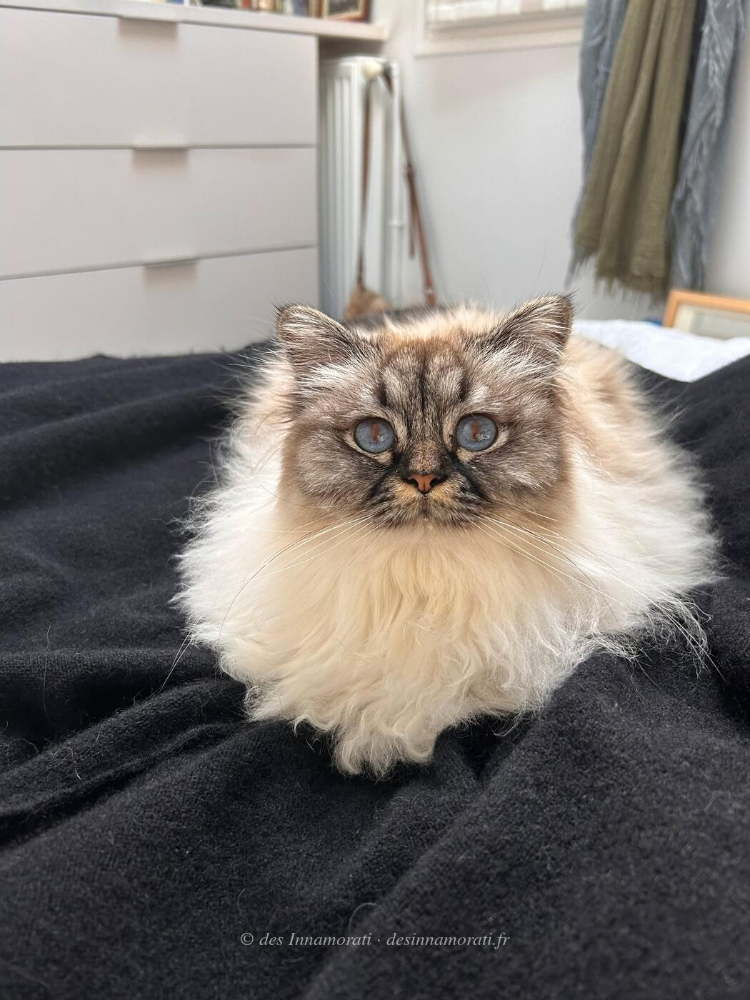

RobeFemelle · Seal tabby point
StatutAdoptée
Album7 photos, de février 2022 à décembre 2024
Frères et sœursTamara des Innamorati, Ti Amo des Innamorati, Toscane des Innamorati
Demi-frères et sœurspar sa mère : 2020 avec Crowned Dream Quinten, 2021 avec Crowned Dream Real Sugar Daddy
par son père : 2021 avec Crowned Dream Kacey, 2022 avec Crowned Dream Kacey, 2022 avec Sanae, 2022 avec Crowned Dream Lizz
par son père : 2021 avec Crowned Dream Kacey, 2022 avec Crowned Dream Kacey, 2022 avec Sanae, 2022 avec Crowned Dream Lizz


Photos réduites et marquées. Elles appartiennent à la Chatterie des Innamorati et ne peuvent pas être reprises dans une annonce.